Guía de Onboarding — Bitácora GRM v2
Para usuarios finales del sistema. Esta guía explica paso a paso cómo usar Bitácora GRM para registrar, gestionar y resolver incidencias combinando la formalidad de un ITSM con la agilidad de un tablero Kanban.
01 ¿Qué es Bitácora GRM?
Bitácora GRM es una plataforma web de gestión de incidencias que combina dos enfoques:
- ITSM (gestión estricta): cada cambio de estado de un ticket se valida contra reglas de negocio, queda registrado en una auditoría inalterable y se mide contra Acuerdos de Nivel de Servicio (SLA).
- Kanban (visualización ágil): el tablero principal muestra los tickets como tarjetas que se arrastran entre columnas para cambiar su estado.
Todo funciona desde el navegador, sin instalar nada. La URL de acceso te la entrega
el equipo de soporte de tu organización (ej.: https://bitacora.tuempresa.com).
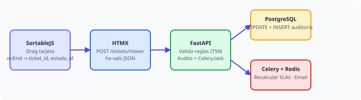
02 Tu primera vez: registrarse e iniciar sesión
2.1. Si tu cuenta ya existe
- Abre el navegador y entra a la URL del sistema.
- En la pantalla de Iniciar sesión escribe tu usuario o email y tu contraseña.
- Haz clic en Entrar. Quedas autenticado por 8 horas (luego te pedirá volver a iniciar sesión).
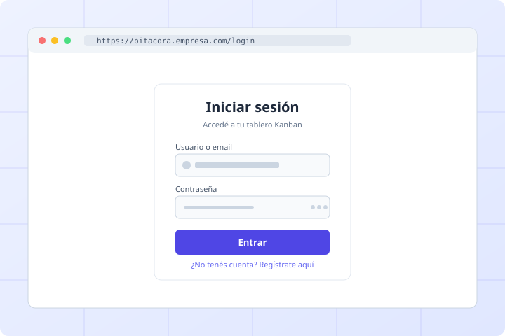
2.2. Si NO tienes cuenta aún
- En la pantalla de login, haz clic en el link "Regístrate aquí".
- Completa:
- Usuario (3–64 caracteres, sin espacios; ej.
jperez) - Email corporativo
- Nombre completo
- Contraseña (mínimo 6 caracteres, máximo 128)
- Confirmar contraseña
- Usuario (3–64 caracteres, sin espacios; ej.
- Haz clic en Registrarme. Tu cuenta queda creada con rol Solicitante por defecto; un Administrador la elevará de rol si corresponde.
- El sistema te autentica automáticamente y te redirige al tablero.
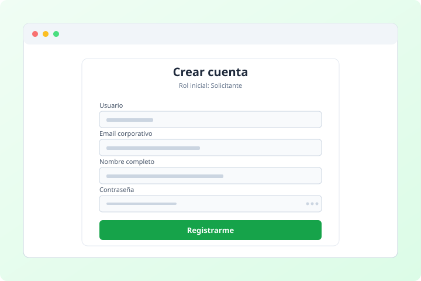
03 Cambiar tu contraseña
Recomendado hacerlo apenas ingreses por primera vez.
- En la barra superior, haz clic en el ícono de llave con el texto "Cambiar contraseña" (esquina superior derecha).
- En el modal que aparece, completa:
- Contraseña actual
- Nueva contraseña (6–128 caracteres, distinta de la actual)
- Confirmar nueva contraseña
- Haz clic en Actualizar contraseña.
- Al guardar, el modal se cierra y aparece un toast verde confirmando. Tu sesión sigue activa.
04 Conocer la interfaz principal
┌────────────────────────────────────────────────────────────────┐ │ Bitácora GRM Tablero Tickets Usuarios [Buscar ⌘K] │ │ ●Online Juan │ ├────────────────────────────────────────────────────────────────┤ │ [Filtros 1] [Archivados] [+ Nueva Inc.] │ ├────────────────────────────────────────────────────────────────┤ │ NUEVO ║ EN CURSO ║ EN ESPERA ║ RESUELTO ║ CERRADO │ │ (2) ║ (1) ║ (1) ║ (1) ║ (12) │ │ ┌─────┐ ║ ┌─────┐ ║ ┌─────┐ ║ ┌─────┐ ║ │ │ │Tarj.│ ║ │Tarj.│ ║ │Tarj.│ ║ │Tarj.│ ║ │ │ └─────┘ ║ └─────┘ ║ └─────┘ ║ └─────┘ ║ │ │ ┌─────┐ ║ ║ ║ ║ │ │ │Tarj.│ ║ ║ ║ ║ │ │ └─────┘ ║ ║ ║ ║ │ └────────────────────────────────────────────────────────────────┘
- Columnas: cada columna representa un estado del flujo de trabajo. El nombre, color y orden los define el Administrador.
- Tarjetas: cada tarjeta es un ticket (incidencia). Tiene un código (ej.
INC-0042), título, prioridad, asignado, etiquetas y un indicador de SLA.
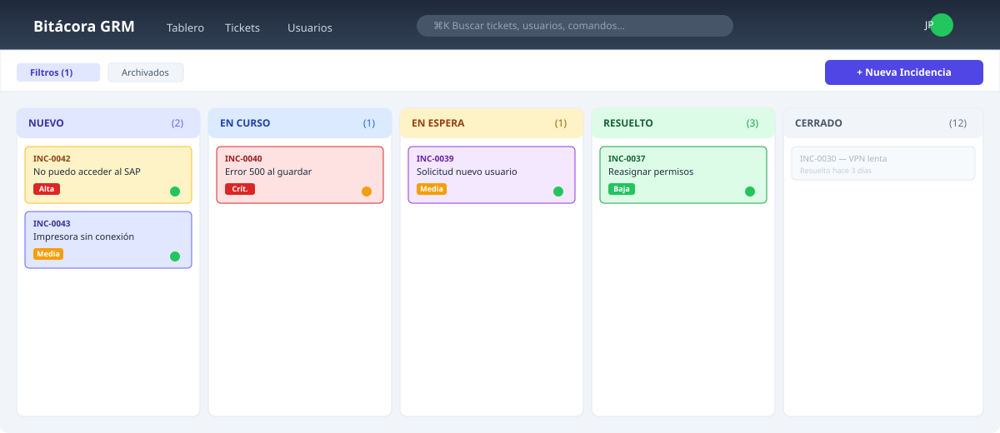
Indicador de SLA
Es la esquina inferior derecha de cada tarjeta:
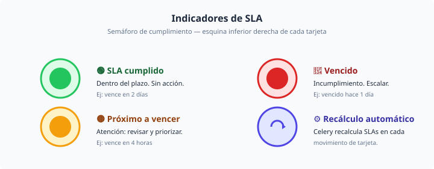
05 Crear una nueva incidencia
- Haz clic en el botón "+ Nueva Incidencia" (esquina superior derecha del tablero).
- Se abre un modal con un formulario. Completa:
- Título (obligatorio): resumen breve (ej. "No puedo acceder al sistema SAP").
- Descripción detallada: acepta Markdown — puedes usar
**negrita**,*itálica*,`código`,[link](url), listas y saltos de línea. - Tipo: Incidencia, Solicitud, Problema o Cambio.
- Prioridad: Crítica, Alta, Media o Baja.
- Fecha de vencimiento (SLA): opcional, deadline esperado.
- Adjuntos: arrastra archivos al cuadro punteado o haz clic en para seleccionar.
- Checklist inicial (opcional): items a verificar al trabajar el ticket.
- Haz clic en Crear Incidencia.
- El modal se cierra, aparece un toast verde y la tarjeta aparece en la primera columna del tablero (estado "Nuevo") sin recargar la página.
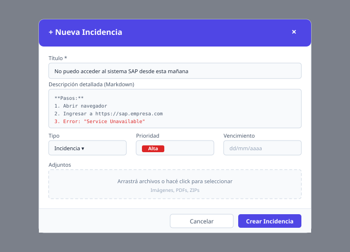
06 Ver y editar el detalle de un ticket
- Haz clic en cualquier parte de la tarjeta (o el ícono de ojo 👁 en su esquina).
- Se abre un modal con toda la información del ticket, organizada en siete pestañas:
| Pestaña | Qué contiene |
|---|---|
| Detalles | Código, título, descripción, prioridad, asignado, solicitante, fechas y campos del ticket. Es la única pestaña con botón Guardar cambios. |
| Comentarios | Hilo de comentarios en orden cronológico, con adjuntos, menciones y referencias. Ver sección 13. |
| Adjuntos | Archivos del ticket: imágenes con vista previa ampliable y el resto descargable. |
| Checklist | Ítems pendientes que se marcan o desmarcan, con su porcentaje de avance. |
| Etapas | Barras de la fase de pruebas (UAT) que alimentan el Gantt. |
| Trazabilidad | Auditoría de cambios: quién, cuándo, qué campo, valor anterior y valor nuevo. |
| Referencias | Relaciones con otros tickets. Ver sección 14. |
- Para editar los datos del ticket: ve a la pestaña Detalles, cambia el valor y pulsa Guardar cambios. El título y la descripción no se guardan solos: si cierras el modal sin pulsar el botón, el cambio se pierde.
- Los campos personalizados sí se guardan solos al cambiar el desplegable, sin pasar por el botón.
- Para agregar un comentario: escribe en el cuadro "Escribir un comentario…" (admite Markdown) y haz clic en Enviar.
- Para subir un adjunto: arrastra un archivo al cuadro de dropzone, haz clic en el botón para elegirlo, o pega una captura directamente con Ctrl+V. Las imágenes se previsualizan y se pueden ampliar (lightbox).
- Para cerrar el modal: clic en la X, en el fondo oscuro, o tecla Esc.
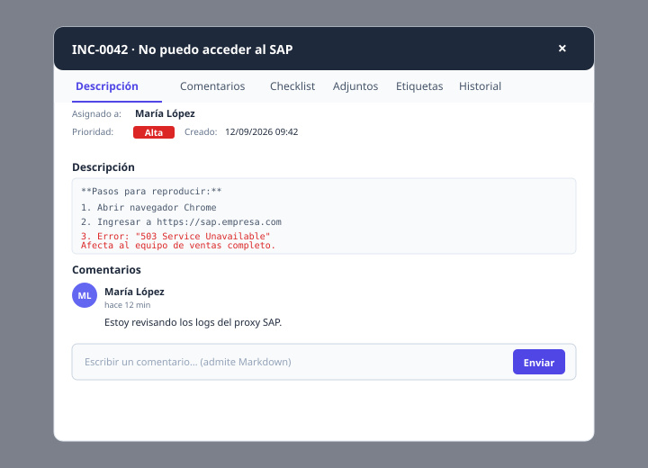
07 Mover un ticket entre columnas (cambiar su estado)
Esta es la acción principal del flujo Kanban.
- Haz clic y mantén presionada una tarjeta.
- Arrastra la tarjeta a otra columna y suéltala encima.
- Si tu rol tiene permiso para mover tarjetas:
- El backend actualiza el ticket, registra el cambio en auditoría y devuelve el HTML actualizado.
- La tarjeta aparece en la nueva columna sin recargar la página.
- Toast verde: "Ticket movido".
- Si tu rol no tiene permiso:
- La tarjeta vuelve sola a su columna original (rollback visual de SortableJS).
- Toast rojo indicando que el rol no puede mover tarjetas en el tablero.
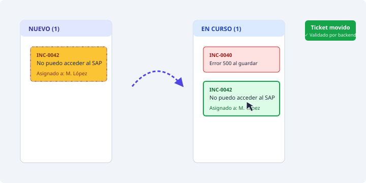
7.1. El tablero trabaja en modo libre
Lo único que se valida antes de aplicar el cambio es tu permiso para mover tarjetas. Esta distinción importa:
| Se valida | No se valida |
|---|---|
|
|
- Cada movimiento se asienta en la pestaña Trazabilidad con fecha, usuario, estado anterior y estado nuevo.
- Si la tarjeta entra en una columna que tiene responsable asignado, se le envía un aviso automático.
- El SLA se recalcula según el estado nuevo.
08 Filtrar el tablero
El tablero puede tener cientos de tarjetas. Para encontrar lo que buscas:
- Haz clic en "Filtros" en la barra superior (esquina izquierda del tablero). Aparece un panel plegable.
- Puedes combinar:
- Búsqueda por texto (título, código o descripción).
- Prioridad (Crítica / Alta / Media / Baja).
- Asignado (un agente específico).
- Etiqueta (un color / categoría).
- Solo mis tickets (casilla) → filtra a los asignados a ti.
- Solo críticos (casilla).
- El contador en el chip "Filtros N" muestra cuántos filtros tienes activos.
- Haz clic en Limpiar para borrar todos los filtros.
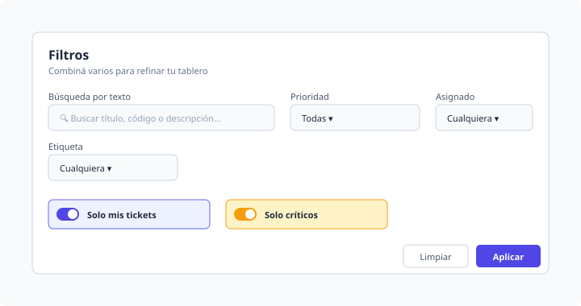
09 Tickets archivados
Los tickets cerrados (o cancelados) se mueven al archivo:
- Haz clic en "Archivados" en la barra superior.
- Se abre un modal con todos los tickets archivados.
- Desde ahí puedes buscar, filtrar y reabrir un ticket si necesitas volver a trabajarlo.
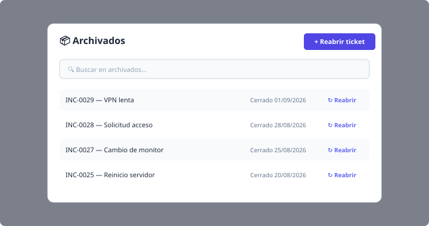
10 Búsqueda global (atajo ⌘K / Ctrl+K)
- Haz clic en el cuadro "Buscar…" en la barra superior, o presiona Ctrl+K (Windows/Linux) o ⌘+K (Mac).
- Se abre un Command Palette: empieza a escribir.
- La búsqueda recorre: tickets (código / título / descripción), usuarios (solo si sos admin) y comandos rápidos (ej. "crear ticket", "ir a usuarios").
- Navega con ↑/↓ y presiona Enter para abrir el resultado.
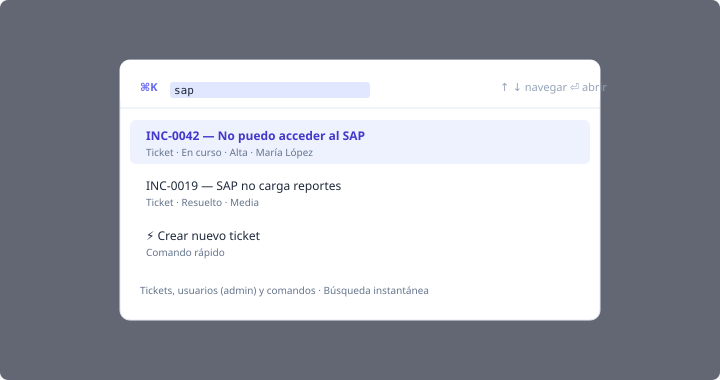
11 Roles y permisos
El sistema tiene 5 roles. Tu rol aparece como un chip de color en la barra superior, al lado de tu nombre.
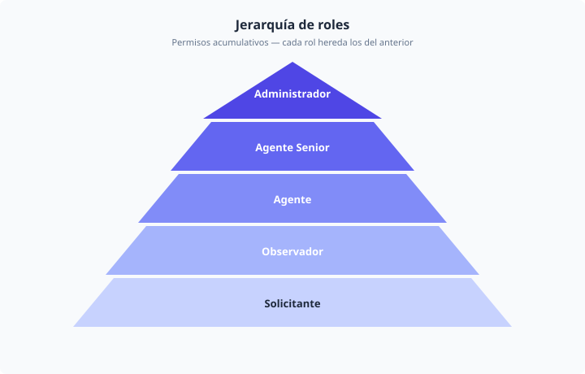
11.1. Qué puede hacer cada rol
| Rol | Puede | No puede |
|---|---|---|
| Solicitante | Crear tickets, comentar, agregar adjuntos, consultar el tablero y el panel. | Mover tarjetas en el tablero, reasignar, archivar, administrar nada. |
| Observador | Consultar el tablero, el detalle de los tickets, la auditoría y el panel. | Crear, editar, comentar, adjuntar o mover nada. |
| Agente | Todo lo del solicitante más mover tarjetas, editar tickets y comentar. | Reasignar tickets, cerrarlos, archivar o administrar nada. |
| Agente Senior | Todo lo del agente más reasignar, cerrar, archivar y consultar la auditoría. | Gestionar usuarios, columnas, catálogos ni configurar automatizaciones. |
| Administrador | Acceso total: usuarios, columnas, catálogos, etiquetas, tableros, importación y exportación, automatizaciones. | — |
11.2. Qué hace el sistema por ti y qué no
La tabla anterior describe el uso esperado de cada rol, y es la guía a la que debe atenerse tu organización. No todo está bloqueado por el sistema:
| Acción | ¿El sistema la bloquea? |
|---|---|
| Mover una tarjeta en el Kanban | Sí. El servidor comprueba el permiso antes de tocar la base de datos. Observador y Solicitante reciben un error 403 y la tarjeta vuelve a su columna. |
| Crear, editar, comentar o adjuntar | No. El permiso está definido en el modelo, pero estas operaciones no se comprueban de forma independiente en el servidor. |
| Reasignar, cerrar, archivar, administrar usuarios o columnas | No. Depende de que la interfaz oculte la acción y de la disciplina del equipo. |
12 Si eres Administrador: tareas adicionales
12.1. Crear / editar usuarios
- En la barra superior, haz clic en "Usuarios" (solo visible para administradores).
- Acciones por fila:
- ✉️ Email: previsualizar y enviar credenciales por correo al usuario (genera una contraseña provisoria aleatoria).
- ✏️ Editar: cambiar nombre, email, departamento, rol o estado activo/inactivo.
- 🔑 Cambiar contraseña: resetear la contraseña de otro usuario (vos defines el valor; no necesitas conocer la actual).
- 🟢/🔴 Activar / Desactivar: soft-delete del usuario.
- Crear un usuario nuevo: haz clic en "+ Nuevo Usuario", completa el formulario y haz clic en Crear.
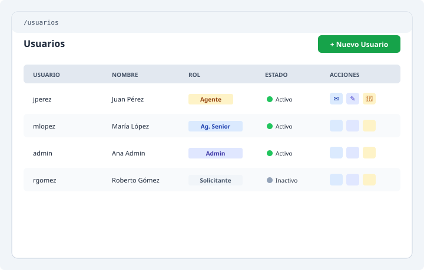
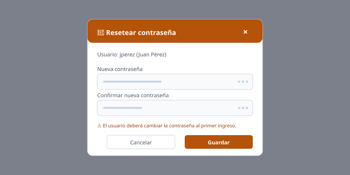
12.2. Gestionar el flujo (columnas)
- En el tablero, haz clic en el botón "+ Añadir columna" (esquina derecha). Completa nombre y color.
- Para renombrar una columna: clic en el título o en el ícono de lápiz.
- Para asignar un responsable a una columna: clic en "responsable" dentro del header; elige un agente. A partir de ese momento, todos los tickets que caigan en esa columna disparan un email automático al responsable.
- Para reordenar columnas: arrastra horizontalmente por el body de la columna. El nuevo orden se guarda automáticamente. Si la API falla, el tablero se recarga para volver al estado real de la BD.
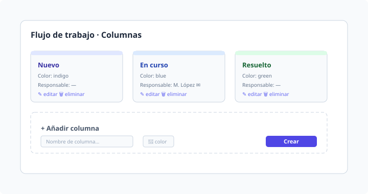
12.3. Eliminar / desactivar una columna
12.4. Ver la auditoría
La auditoría está disponible en cada ticket, en la pestaña Trazabilidad. Cada cambio registra: fecha, usuario, acción, valor anterior y valor nuevo.
↑ Volver arriba13 Colaborar en los comentarios de un ticket
La pestaña Comentarios es donde se coordina el trabajo. Desde la última versión admite archivos, menciones, reacciones, comentarios internos y una ventana de edición.
13.1. Escribir un comentario
- En la pestaña Comentarios, escribe en el cuadro de texto.
- El texto admite Markdown y admite hasta 5000 caracteres. Si te pasas, el sistema lo avisa y no lo guarda.
- Haz clic en Enviar. El comentario aparece al final del hilo con tu nombre, tu rol y la hora.
13.2. Adjuntar un archivo a un comentario
Puedes adjuntar archivos directamente al comentario, no solo al ticket en general:
- Arrastrar el archivo hasta el área de escritura.
- Pegarlo con Ctrl+V — ideal para pegar una captura que acabas de hacer sin guardarla antes.
- Elegirlo con el botón de selección de archivos.
13.3. Mencionar a un compañero con @
Escribe @ seguido del nombre de usuario y el sistema lo reconoce como
mención. El usuario mencionado recibe una notificación y puede abrir el ticket
directamente desde ella.
Usa las menciones cuando necesites a alguien concreto: @jperez para revisar un
caso, @andres para escalar un bloqueo. Evita usarlas para informar a todo el
equipo: para eso está el comentario normal.
13.4. Reaccionar en lugar de escribir
Cuando un comentario ya dice lo que querías decir, reacciona a él en lugar de escribir "de acuerdo". Las reacciones cuentan las confirmaciones sin ensuciar el hilo.
13.5. Editar un comentario: tienes 30 minutos
Durante los 30 minutos siguientes a escribirlo, tu comentario muestra un botón Editar y un contador con el tiempo restante. Cada vez que lo editas, la ventana se renueva: puedes seguir corrigiéndolo mientras trabajas en ello.
13.6. Comentarios internos
Marca la casilla Interno al escribir para que el comentario sea visible solo para el equipo. Los solicitantes nunca lo ven, ni en el ticket ni en las notificaciones.
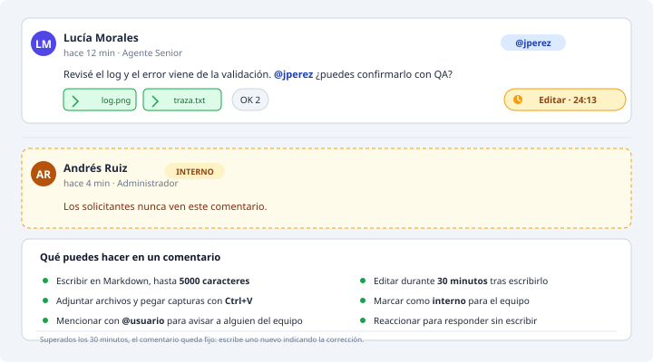
14 Referenciar otros tickets
La pestaña Referencias conecta un ticket con otros. Sirve para explicar de dónde viene un problema, para separar subtareas de una épica y para marcar qué ticket bloquea a cuál.
14.1. Crear una referencia
- Abre el ticket y ve a la pestaña Referencias.
- Haz clic en + Agregar referencia.
- Escribe el código o el título del ticket al que quieres referenciar y selecciónalo de la lista que aparece.
- Elige el tipo de relación y guarda.
14.2. Los seis tipos de relación
| Tipo | Significa | Cuándo usarlo |
|---|---|---|
| relacionado | Están relacionados, sin una dirección concreta. | Dos tickets que hablan del mismo tema pero no dependen entre sí. |
| duplicado | Es el mismo problema reportado en otro ticket. | Al recibir un reporte que ya existe, márcalo así en vez de resolverlo dos veces. |
| padre | Este ticket es subtarea del referenciado. | Una épica o historia de usuario de la que cuelgan varios casos concretos. |
| hijo | Este ticket es el contenedor del referenciado. | El caso inverso: estás en la épica y señalas uno de sus casos. |
| bloquea | Este ticket impide avanzar al referenciado. | Una caída de infraestructura que frena varios tickets de negocio. |
| bloqueado_por | Este ticket no puede avanzar hasta que se resuelva el referenciado. | Estás esperando a otro equipo: deja constancia de qué te frena. |
14.3. Reglas que no puedes saltarte
- Un ticket no puede referenciarse a sí mismo.
- No se puede repetir la misma combinación de origen, destino y tipo.
- Sí puedes tener dos tipos distintos entre los mismos dos tickets, porque son relaciones con significado diferente.
- Si borras un ticket, sus referencias se borran con él.
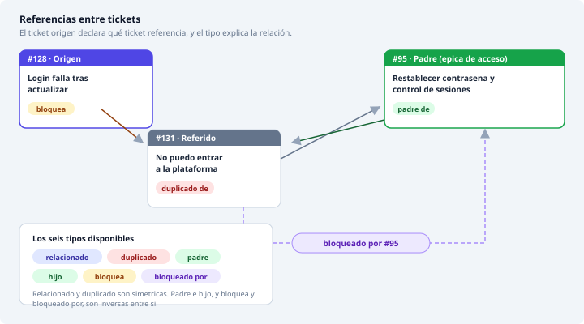
15 Vistas alternativas del tablero
El tablero Kanban no es la única forma de leer tus tickets. En la barra superior hay un selector con siete vistas que muestran los mismos datos con otro enfoque. Cambiar de vista no crea ni modifica nada.
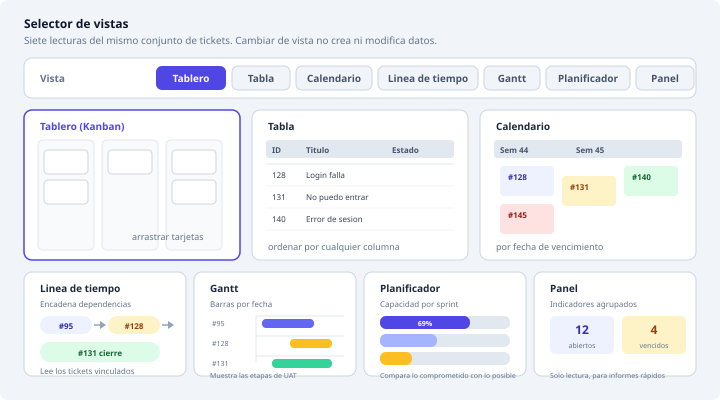
| Vista | Para qué sirve | Ejemplo de uso |
|---|---|---|
| Tablero | La vista de trabajo por defecto: tarjetas en columnas que se arrastran. | Atender la cola del día moviendo tarjetas. |
| Tabla | Una fila por ticket, ordenable por cualquier columna. | Buscar un ticket concreto entre cientos revisando un listado. |
| Calendario | Los tickets colocados por su fecha de vencimiento. | Ver de un vistazo qué se vence esta semana. |
| Línea de tiempo | Los tickets encadenados según sus referencias. | Seguir el recorrido de un ticket que nació de otro. |
| Gantt | Barras horizontales por fecha, con las etapas de pruebas de cada ticket. | Planificar la ventana de UAT de un lote de tickets. |
| Planificador | Compara lo comprometido en cada sprint con la capacidad disponible. | Detectar que se asignó más trabajo del que cabe en el sprint. |
| Panel | Indicadores agregados: cuántos hay abiertos, cuántos vencidos. | Informar a un jefe sin abrir ticket por ticket. |
16 Automatizaciones Butler
Butler es el módulo que aplica reglas automáticas. Está pensado para el Administrador, pero conviene que todo el equipo sepa qué reglas existen: una regla puede cambiar un ticket sin que nadie lo mueva a mano.
16.1. Qué es una regla
Una regla tiene cuatro cosas: un disparador, unas condiciones, unas acciones y un número de prioridad.
| Disparador (qué lo despierta) |
|---|
ticket_creado — cada ticket nuevo |
ticket_asignado — cuando alguien toma un ticket |
ticket_etiquetado — cuando se le pone una etiqueta |
ticket_estado_cambiado — cuando la tarjeta cambia de columna |
cada_dia — una vez al día |
cada_semana — una vez por semana |
| Acción (qué hace) | Efecto |
|---|---|
set_estado | Mueve el ticket a una columna. |
set_asignado | Asigna el ticket a un responsable. |
add_etiqueta / remove_etiqueta | Añade o quita una etiqueta. |
add_comentario | Escribe un comentario automático. |
notify | Envía una notificación. |
archive | Archiva el ticket. |
backup_database / backup_cleanup | Lanza o purga una copia de seguridad. |
16.2. Orden de ejecución
Cuando varias reglas se disparan a la vez, se ejecutan de la prioridad más baja a la más alta. El valor por defecto es 100. Usa números bajos para las reglas que deben correr primero (por ejemplo, asignar antes de notificar).
16.3. Registro y desactivación
- Cada ejecución queda registrada con la regla, el ticket, si terminó bien y el detalle. Así se puede auditar qué hizo cada regla y por qué.
- Una regla desactivada no se ejecuta, pero conserva su configuración. Desactivar es la forma segura de dejar de aplicar una regla sin perderla.
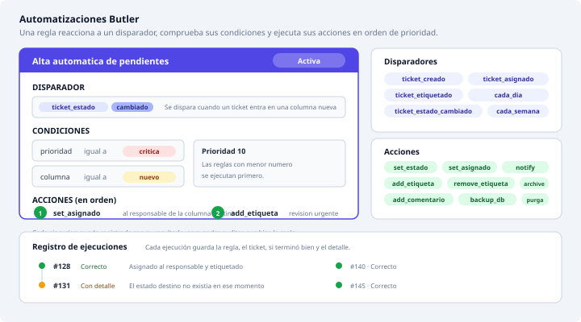
17 Datos de pruebas y expedientes de garantía
Además de la gestión del ticket, el sistema registra el resultado de las pruebas de calidad y genera el código de expediente de garantía. Los campos aparecen en el ticket, en el apartado de creación y en la carga masiva de expedientes.
17.1. Los campos de pruebas
| Campo | Valores admitidos |
|---|---|
| Módulo | Control ERM, Gobierno, Incidencias, Validación, Auditoria, Filiales, Información Inventario, Registro de Información, Documentación, Mejoras Transversales, Seguimiento y Control. También se puede dejar vacío. |
| Ambiente | QA o PRODUCCION. También se puede dejar vacío. |
| Ítem a probar | Portal WEB APEX, Email, Base de Datos. También se puede dejar vacío. |
| Resultado de pruebas | OK, N/A, OK CON OBS., POSTERGADA, DESESTIMADA, NOK. |
| QA Tester | Se guarda con el formato Nombre <email> para que quede trazable quién hizo la prueba. |
17.2. El código del expediente
Los expedientes de garantía llevan un código con el formato
GAR_<código del caso>-<correlativo>. Por ejemplo:
GAR_HU128-003 ← caso HU128, tercer registro del lote GAR_SIN-00042 ← el caso no traía código: se generó uno
- El correlativo avanza con cada fila importada y se escribe con tres dígitos.
- Si el archivo de carga no trae el código del caso, el sistema genera
GAR_SIN-seguido del número de fila. - El código se limita a 20 caracteres: si es más largo, se trunca.
NOK es una constancia, no un bloqueo. El sistema no impide cerrar un ticket con resultado NOK ni cambia su estado por sí solo. Si un ticket no debe cerrarse hasta que las pruebas pasen, dilo explícitamente en un comentario y encárgate de revisarlo.
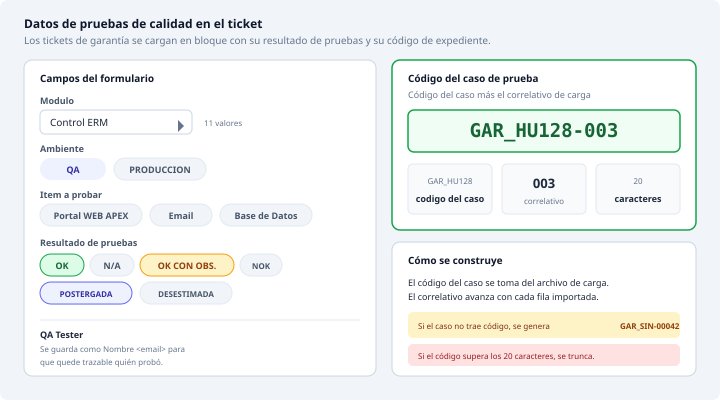
17.3. Carga masiva y exportación
- El Administrador puede cargar expedientes de garantía en bloque desde una hoja de cálculo, en lugar de crear el ticket a mano.
- También puede exportar listados para analizarlos fuera del sistema.
- Ambas operaciones están en la sección de administración (ver sección 12).
18 Seguridad y sesiones
Esta sección recoge cómo protege el sistema tu sesión y tus datos. No hace falta que hagas nada para Benefitiarte: funciona sola.
18.1. Tu sesión
- Al iniciar sesión se genera una cookie firmada que te identifica.
- Cada página que pides viaja con esa cookie, y el servidor valida la firma antes de mostrarte nada.
- Tu sesión expira a las 8 horas de inactividad. Después verás el aviso "Sesión expirada" y tendrás que volver a entrar.
- Al usar Salir, la cookie se elimina y esa sesión deja de ser válida de inmediato, también desde otra pestaña.
18.2. Tu contraseña
El sistema no guarda tu contraseña. Guarda una huella matemática de ella, con una sal distinta para cada usuario. Esto significa que dos personas con la misma contraseña tienen huellas diferentes, y que nadie — tampoco un administrador — puede leer tu contraseña desde el sistema.
18.3. Protecciones automáticas del navegador
El servidor envía en cada respuesta unas cabeceras que el navegador aplica sin que tengas que hacer nada:
| Protección | Qué evita |
|---|---|
| No se puede incrustar | Que otra página web meta la tuya dentro de un marco para hacer clic engañosamente a tu nombre. Es la protección clásica contra el clickjacking. |
| No se adivina el tipo de archivo | Que el navegador interprete un archivo de otra manera a como indica su extensión, lo que permitiría ejecutar código en tu navegador. |
| Referencia controlada | Que al salir del sistema, la dirección de la página no viaje a otro sitio y revele qué estabas viendo. |
18.4. Lo que debes hacer tú
- Usa Salir al terminar, sobre todo en equipos compartidos.
- No compartas tu cuenta. Cada persona debe tener la suya: así la auditoría registra de verdad quién hizo cada cambio (ver sección 11).
- Cambia la contraseña si sospechas que alguien la conoce, y avisa al administrador.
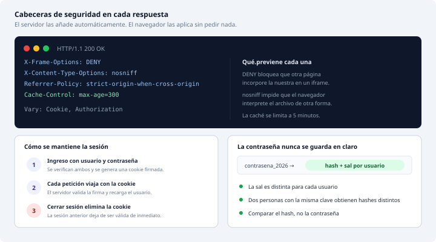
19 Cerrar sesión
- Haz clic en "Salir" (esquina superior derecha).
- El sistema invalida tu sesión y te redirige a la pantalla de login.
20 Atajos de teclado útiles
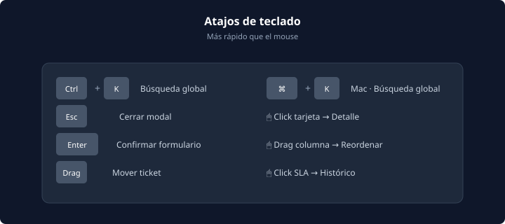
| Atajo | Acción |
|---|---|
| Ctrl + K / ⌘ + K | Abre la búsqueda global |
| Esc | Cierra cualquier modal abierto |
| Enter en un input | Confirma el formulario del modal |
| Click + arrastrar en tarjeta | Mueve el ticket a otra columna |
| Click + arrastrar en columna (admin) | Reordena columnas |
| Click en tarjeta | Abre el detalle |
21 Errores frecuentes y cómo resolverlos
| Síntoma | Causa probable | Qué hacer |
|---|---|---|
| Toast rojo "No tienes permisos para realizar esta acción" | Tu rol no permite esa acción | Pide a un administrador que te otorgue el rol correspondiente |
| Toast rojo al arrastrar una tarjeta | Tu rol no tiene permiso para mover tarjetas en el tablero (Solicitante u Observador) | Si debes moverlas, pídele a un administrador que eleve tu rol a Agente |
| La tarjeta vuelve a su columna original al soltarla | El backend rechazó el movimiento | Revisa el toast para ver el motivo exacto |
| Editaste el título o la descripción y no se guardó | Cerraste el modal sin pulsar Guardar cambios | Vuelve a abrir el ticket y guarda antes de cerrar |
| El comentario dice "ventana de edición cerrada" | Pasaron más de 30 minutos desde que lo escribiste | Escribe un comentario nuevo indicando la corrección |
| "Sesión expirada — Recarga la página" | Pasaron 8 horas sin actividad | Recarga la página y vuelve a iniciar sesión |
| La pantalla se queda en "Cargando…" | Fallo de red transitorio | Espera unos segundos; si persiste, recarga |
| Las imágenes de los adjuntos no se ven | Tu navegador bloqueó el lightbox (cookies/storage) | Habilita almacenamiento local para el dominio |
| No puedes crear columnas / usuarios | No sos Administrador | Pide a un Admin que haga el cambio, o solicita elevación de rol |
22 Buenas prácticas
- Título claro y específico: evita "Ayuda" o "No anda"; prefiere "Error 500 al guardar pedido en módulo ventas".
- Descripción reproducible: incluye pasos para reproducir el problema, mensajes de error textuales, capturas y URLs afectadas.
- Prioridad correcta: Crítica = negocio detenido. Alta = bloqueo importante. Media = afecta pero hay workaround. Baja = mejora o consulta.
- Asignación temprana: si sabes quién debe resolver, asigna directamente al soltarlo en su columna.
- Comentarios contextuales: cada vez que avances en el ticket, deja un comentario (incluso para "sigo investigando"). Eso permite a tu equipo y al solicitante ver el avance.
- Checklist para tareas complejas: si el ticket tiene varios pasos, usa el checklist. Cada ítem es una subtarea clara.
- Cierra tickets cuando corresponda: un ticket "resuelto" sin cerrar termina ocupando capacidad del tablero.
23 Glosario
| Término | Definición |
|---|---|
| Ticket / Incidencia | Unidad de trabajo. Representa un problema, solicitud, cambio o problema conocido. |
| Estado | Columna del Kanban. Define en qué fase está el ticket. |
| Prioridad | Urgencia del ticket (Crítica / Alta / Media / Baja). |
| SLA | Service Level Agreement — tiempo objetivo de resolución. Si vence, el indicador se pone rojo. |
| Asignado | Agente responsable de resolver el ticket. |
| Solicitante | Quien reporta la incidencia. |
| Auditoría | Registro inalterable de todos los cambios (quién, cuándo, qué). |
| Columna con responsable | Cada vez que un ticket cae en esa columna, se notifica por email al responsable. |
| Archivado | Ticket cerrado que ya no aparece en el tablero principal. |
| Command Palette | Buscador global (⌘+K / Ctrl+K). |
24 Soporte y contacto
- Soporte de primer nivel: equipo de Mesa de Ayuda de tu organización.
- Errores del sistema / solicitudes de mejora: crear un ticket en Bitácora GRM con prioridad "Media" o "Baja".
- Problemas críticos del propio sistema: contacta directamente al equipo de desarrollo (ver README en GitHub).
Hecho con FastAPI · PostgreSQL · Redis/Celery · HTMX.